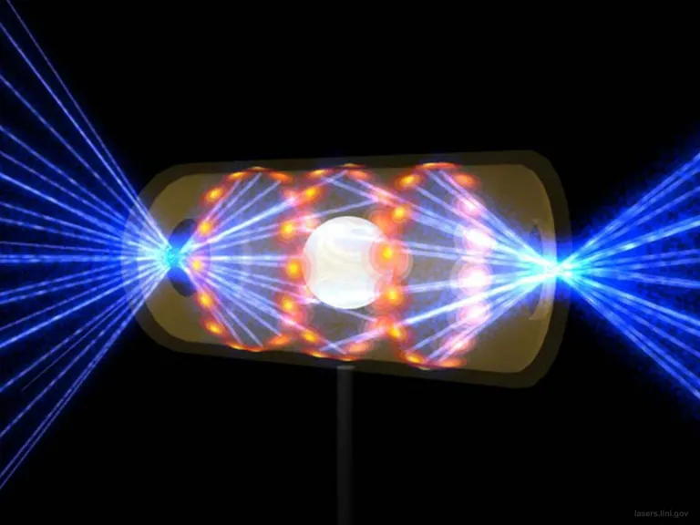

Energia limpa: o que significa o novo avanço científico na fusão nuclear?
Uma série de lasers na Instalação Nacional de Ignição (NIF, na sigla em inglês)
Um laboratório dos EUA provocou com sucesso uma reação de fusão que liberou mais energia do que foi aplicada inicialmente para alimentar o processo. Mas ainda há um longo caminho a percorrer em direção à fusão como fonte de energia limpa.
POR MICHAEL GRESHKO
O recorde de fusão foi alcançado na Instalação Nacional de Ignição do Laboratório Nacional Lawrence Livermore, ...
O recorde de fusão foi alcançado na Instalação Nacional de Ignição do Laboratório Nacional Lawrence Livermore, na Califórnia, EUA. No laboratório, o combustível de fusão é inflamado com um conjunto de 192 lasers. Esses lasers atingem altas energias graças, em parte, a dispositivos chamados pré-amplificadores (vistos aqui).
FOTO DE DAMIEN JEMISON LAWRENCE LIVERMORE NATIONAL LABRATORY (272988)
Por mais de 60 anos, os cientistas perseguiram um dos desafios físicos mais difíceis já concebidos: aproveitar a fusão nuclear, fonte de energia das estrelas, para gerar abundante energia limpa aqui na Terra. Nesta semana, os pesquisadores anunciaram uma marca histórica neste esforço. Pela primeira vez, um reator de fusão produziu mais energia do que foi usada para desencadear a reação.
Em 5 de dezembro, uma série de lasers na Instalação Nacional de Ignição (NIF, na sigla em inglês), parte do Laboratório Nacional Lawrence Livermore, na Califórnia (EUA), disparou 2,05 megajoules de energia em um minúsculo cilindro contendo uma pastilha de deutério e trítio congelados, formas mais pesadas de hidrogênio. A pastilha comprimiu e gerou temperaturas e pressões intensas o suficiente para causar a fusão do hidrogênio. Em uma pequena chama que durou menos de um bilionésimo de segundo, os núcleos atômicos em fusão liberaram 3,15 megajoules de energia – cerca de 50% a mais do que havia sido usado para aquecer a pastilha.
Embora a conflagração tenha terminado rapidamente, seu significado perdurará. Há muito tempo que pesquisadores da fusão procuram obter ganho líquido de energia, o que é chamado de equilíbrio científico. “Simplificando, este é um dos acontecimentos científicos mais impressionantes do século 21”, declarou a secretária de Energia dos EUA, Jennifer Granholm, em um comunicado de imprensa em Washington, DC.
Ao atingir o ponto de equilíbrio científico, o NIF mostrou que pode atingir a “ignição”: um estado da matéria que pode facilmente sustentar uma reação de fusão. Ser capaz de estudar as condições de ignição em detalhes será “um divisor de águas para todo o campo da fusão termonuclear”, diz Johan Frenje, físico de plasma do MIT cujo laboratório contribuiu para bater os recordes do NIF.

Simulação mostra um alvo da NIF dentro de uma cápsula com raios de laser que entram pelas aberturas em cada extremidade. Os feixes comprimem e aquecem o alvo nas condições necessárias para que ocorra a fusão nuclear.
FOTO DE LAWRENCE LIVERMORE NATIONAL LABORATORY
A faísca da fusão
Embora a fusão e a fissão nucleares extraiam energia do átomo, elas operam de maneira diferente. As usinas nucleares de hoje dependem da fissão nuclear, que libera energia quando se separam átomos grandes e pesados, como o urânio, devido à desintegração radioativa. Na fusão, no entanto, os átomos leves e pequenos, como o hidrogênio, fundem-se em outros maiores. No processo, eles liberam uma pequena parte de sua massa combinada como energia.
Em laboratórios, provocar a fusão dos núcleos de hidrogênio no hélio requer a criação e confinamento de um “plasma” – um gás eletricamente carregado, onde os elétrons não estão mais ligados aos núcleos atômicos – em temperaturas várias vezes mais altas do que o interior do Sol. Cientistas aprenderam décadas atrás como desencadear esse processo de forma explosiva dentro de bombas de hidrogênio, e os reatores de fusão de hoje podem fazer isso acontecer de forma controlada por instantes fugazes.
Desde o final dos anos 1950 e início dos anos 1960, os reatores de fusão compartilham um objetivo fundamental: criar um plasma o mais quente e denso possível e, em seguida, confinar esse material por tempo suficiente para que os núcleos dentro dele atinjam a ignição. O problema é que o plasma é incontrolável: ele é carregado eletricamente, o que significa que ele responde a campos magnéticos e gera o seu próprio campo à medida que se movimenta. Para suportar a fusão, ele precisa atingir temperaturas realmente impressionantes. No entanto, é tão difuso que esfria facilmente.
O físico Riccardo Betti, especialista em fusão nuclear a laser da Universidade de Rochester (Nova Iorque, EUA), compara o desafio da ignição por fusão à queima de gasolina em um motor. Uma pequena quantidade de gasolina se mistura com o ar e depois se inflama com uma faísca. A faísca não é grande, mas não precisa ser: basta acender uma pequena fração da mistura da gasolina com o ar. Se essa pequena fração se inflamar, a energia que ela libera é suficiente para incendiar o resto do combustível.
Em termos de energia liberada, as reações nucleares têm cerca de um milhão de vezes mais impacto do que as reações químicas – e são muito mais difíceis de acontecer. Experimentos de fusão anteriores podem ter alcançado as temperaturas certas, as pressões certas ou os tempos certos de confinamento de plasma para alcançar a ignição, mas não todos esses fatores de uma só vez. “Basicamente, a faísca foi gerada, mas não foi forte o suficiente”, explica Betti.
Uma pastilha de combustível
O método do NIF para produzir o combustível nuclear começa com uma pastilha do tamanho de um grão de pimenta, que contém uma mistura congelada de deutério e trítio, dois isótopos mais pesados de hidrogênio. Essa cápsula é colocada dentro de um cilindro de ouro aproximadamente do tamanho da borracha de um lápis, chamada hohlraum, que é montada em um braço no meio de uma grande câmara perfurada com laser.
Para desencadear a fusão, o NIF dispara 192 lasers de uma vez no hohlraum, que penetram através de dois orifícios. Os feixes, então, atingem a superfície interna do hohlraum, o que provoca que ele cuspa raios-x de alta energia que aquecem rapidamente as camadas externas da cápsula, e as queima e expulsa para fora.
A parte interna dessa cápsula se comprime rapidamente quase cem vezes mais densa que o chumbo – o que força o deutério e o trítio dentro dela a atingirem as temperaturas e pressões necessárias para a fusão.
Em 1997, a Academia Nacional de Ciências definiu o que significaria “ignição” para a instalação: quando a energia de fusão liberada supera a energia dos lasers. A instalação foi inaugurada em 2009, e atingir esse patamar acabou levando mais de uma década. Em agosto de 2021, o NIF relatou sua melhor execução experimental até aquele ponto: 1,32 megajoules de energia de fusão liberada para 1,92 megajoules de energia de laser inserida.
A corrida de 2021 sinalizou que a ignição poderia ser alcançada dentro do reator NIF. Para finalmente cruzar o limiar, os pesquisadores do NIF fizeram alguns pequenos ajustes, que incluíam operar com energias de laser ligeiramente mais altas. “Qualquer pequena mudança, feita da forma certa, terá mudanças significativas no resultado”, destaca Frenje.